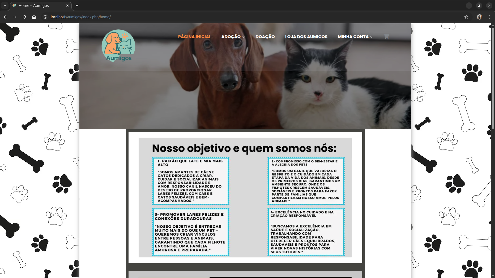
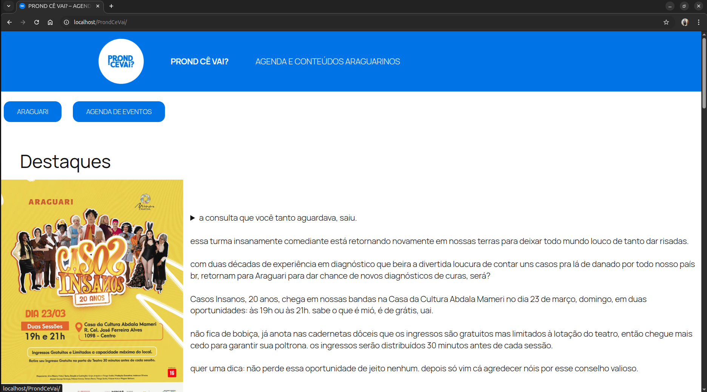

Meus Projetos Recentes

Site localhost para controle de financas pessoais
Realizado com auxilio da IA, com planos de melhorar mais ainda.

Site Aumigos - Projeto da faculdade (WordPress)
Trata - se da representacao de um site de um canil municipal com algumas coisas a mais

Site ProndCeVai - Projeto da faculdade e pessoal (WordPress)
Criação de site completo para cliente, demonstrando atenção aos detalhes e organização.